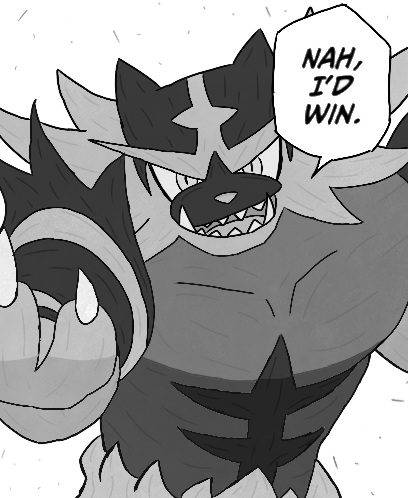
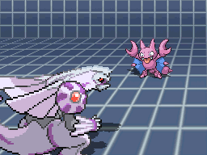
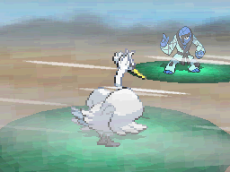
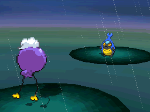

Balance
O arquétipo Balance busca um equilíbrio entre ataque e defesa. Times balanceados possuem boas opções defensivas e ofensivas, permitindo adaptação durante a batalha.

Hyper Offense
Hyper Offense é um estilo extremamente agressivo, focado em pressão constante. Utiliza sweepers rápidos e fortes para facilitar o dano.

Trick Room
Trick Room inverte a ordem de velocidade, fazendo com que Pokémon mais lentos ataquem primeiro. Esse estilo favorece Pokémon com alto ataque e baixa velocidade.

Control
O arquétipo Control busca manipular o ritmo do jogo, seja através de velocidade ou clima.
Speed Control
Speed Control envolve técnicas como Tailwind, Thunder Wave e Choice Scarf para manipular a velocidade dos Pokémon.

Weather Control
Weather Control utiliza climas como chuva, sol, areia ou granizo para fortalecer estratégias específicas.

Principais características
- Balance: versatilidade
- Hyper Offense: agressividade
- Trick Room: inversão de velocidade
- Control: manipulação de ritmo
Comparação dos Arquétipos
| Arquétipo | Velocidade | Estilo | Dificuldade |
|---|---|---|---|
| Balance | Média | Equilibrado | Média |
| Hyper Offense | Alta | Agressivo | Alta |
| Trick Room | Baixa | Tático | Alta |
| Control | Variável | Estratégico | Média |
| Dados baseados em estratégias competitivas | |||